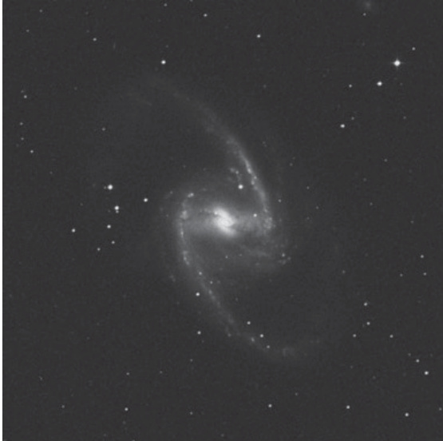

天炉座大棒旋星系 · Great Barred Spiral Galaxy (NGC 1365)

| 参数 | 英文 | 中文 |
|---|---|---|
| 类型 | Barred Spiral Galaxy (SBb) | 棒旋星系（SBb型） |
| 星座 | Fornax | 天炉座 |
| 赤经 | RA: 03ʰ33.6ᵐ | 03时33.6分 |
| 赤纬 | Dec: -36°08′ | -36度08分 |
| 视星等 | Mag: 9.3; 8.3 (O'Meara) | 9.3等；8.3等（奥马拉数据） |
| 角直径 | Dim: 11.2′×5.9′ | 11.2′×5.9′ |
| 表面亮度 | SB: 13.6 | 表面亮度：13.6 |
| 距离 | ~60 million light-years | 约6000万光年 |
| 发现者 | James Dunlop, 1826 | 詹姆斯·邓洛普，1826年 |
NGC 1365 is one of the most stunning barred spiral galaxies in the night sky. While most sources list the galaxy as magnitude 9.3, I made a visual estimate and found it a full magnitude brighter. Visible with averted vision in 7×50 binoculars, the galaxy also appears as a dim, round glow in my antique telescope.
NGC 1365是夜天中最壮观的棒旋星系之一。尽管多数资料将其星等标为9.3等，但通过目视估算，我发现其亮度足足高出1个星等。使用7×50双筒望远镜配合眼角余光法可见其踪影，在我的古董望远镜中则呈现为朦胧的圆形光晕。
James Dunlop [September 2, 1826]: A pretty large faint round nebula, about 3½′ diameter, gradual slight condensation to the centre, very faint at the margin.
詹姆斯·邓洛普 [1826年9月2日]：一个相当大而暗淡的圆形星云，直径约3½′，向中心逐渐轻微凝聚，边缘极为暗淡。
This impressive system has a linear diameter of 160,000 light-years and a luminosity 200 billion times that of the Sun, so it is a reasonable match for our Milky Way. In photographs, NGC 1365 displays near-perfect symmetry. Two long, arabesque arms spring from a central bar centered on a dazzlingly bright nucleus. That bar measures an awesome 94,000 light-years in length — about three times the distance of the Sun from the Milky Way's center.
这个壮观的星系线直径达16万光年，光度为太阳的2000亿倍，因此与我们的银河相当匹配。在照片中，NGC 1365展现出近乎完美的对称结构。两条修长的阿拉伯花纹状旋臂从中央棒状结构延伸而出，棒状结构中心是一个耀眼的明亮核。该棒状结构长度达惊人的9.4万光年——约为太阳至银河中心距离的三倍。
John Herschel: A very remarkable nebula. A decided link between the nebula M51 and M27. Centre very bright; somewhat extended; gradually very much brighter to the middle.
约翰·赫歇尔：极为显著的星云。明确连接着M51与M27星云。中心极亮；略有延展；向中部逐渐显著增亮。
Careful inspection of the structure in NGC 1365, however, reveals that the galaxy is a less perfect system than NGC 1300 in Eridanus, the prototype, and most glorified, barred spiral galaxy in the heavens. In high-resolution images, NGC 1365's bar is ever so slightly warped and less smooth than that in NGC 1300; its arms are also more open, making it more of an intermediate class of barred spiral – between an SBb and an SBc.
然而，对NGC 1365结构的细致观测表明，相较于波江座（Eri）中堪称原型且最负盛名的棒旋星系NGC 1300，该星系的结构规整性稍逊一筹。高分辨率图像显示，NGC 1365的棒状结构存在轻微扭曲，平滑度不及NGC 1300；其旋臂开敞度更大，使其更接近于SBb型与SBc型之间的过渡类棒旋星系。
Because NGC 1365 is oriented 27° from edge-on, its spiral nature is comfortably revealed. It has four well-developed arms – two major ones and two rudimentary ones. As with other barred spirals, dust lanes appear on opposite sides of its bar. These lanes lie on the bar's leading edge relative to the galaxy's direction of rotation.
由于NGC 1365的倾角为27°（偏离侧向），其旋涡结构清晰可辨。该星系拥有四条发育良好的旋臂——两条主旋臂与两条雏形旋臂。与其他棒旋星系类似，尘埃带对称分布于其星系棒两侧。这些尘埃带位于星系棒的前导边缘（相对于星系自转方向）。
In color photographs, the bar and its immediate surroundings are populated by cool, yellow stars. In contrast, the long, graceful arms at the end of the bar are peppered with hot blue stars and pink star-forming regions, which mark the locations where interstellar matter is being compressed at the crests of density waves, triggering star formation. Maximum star formation in these arms occurs at the ends of the bar.
在彩色照片中，棒状结构及其邻近区域分布着低温的黄色恒星。与之形成鲜明反差的是，棒状结构末端修长优雅的旋臂上，散布着炽热的蓝色恒星与粉红色恒星形成区——这些区域标志着星际物质在密度波峰处被压缩，从而触发恒星形成的具体位置。这些旋臂中的恒星形成活动在棒状结构末端达到极大值。
NGC 1365 is both a Seyfert and starburst galaxy. Being a Seyfert galaxy means that its small and intensely bright nucleus behaves like a low-energy quasar, ejecting matter episodically into space. Indeed, radio images of NGC 1365's core show jetlike structures originating from the nucleus and extending about 5″ (~1 million light-years) in position angle 125°; these jets are aligned with the minor axis of the galaxy. The energy feeding the jet is probably produced by a supermassive black hole at the galaxy's heart.
NGC 1365既是赛弗特星系又是星暴星系。作为赛弗特星系，其小而极亮的核表现出类似低能类星体的特性，会间歇性地向太空抛射物质。射电观测图像显示，该星系核区存在喷流状结构，其延伸范围约达5″（约100万光年），位置角为125°；这些喷流与星系的短轴方向一致。驱动喷流的能量很可能源自星系心宿处的一个超大质量黑洞。
The Seyfert nucleus, which is a weak radio source, is surrounded by an 8″×20″ ring of radio emission. This radio ring contains a number of hotspots, which may indicate the presence of supernovae and supernova remnants.
这个作为弱射电源的赛弗特星系核，被一个8″×20″的射电辐射环所包围。该射电环包含多个热点，可能预示着超新星和超新星遗迹的存在。
NGC 1365A is located within one of the super star clusters that have been discovered in the nuclear region by the Hubble Space Telescope (HST). HST images also reveal that the Seyfert nucleus is surrounded by an intense starburst region. The complex patchiness of this region suggests that the galaxy's ancient red stars are probably being overwhelmed by the light of new red giants and supergiants formed in the starburst, which may be young globular clusters.
NGC 1365A位于哈勃空间望远镜（HST）在核区发现的超级星团之一内部。HST图像还显示，该赛弗特星系核被一个强烈的星暴区域所包围。该区域的复杂斑块结构表明，星系中古老的红色恒星可能被星暴中形成的新红巨星和超巨星的光芒所掩盖，这些可能属于年轻的球状星团。
NGC 1365 was also part of the Hubble Space Telescope's Key Project on the Extragalactic Distance Scale, which sought to measure the Hubble constant to an accuracy of 10 percent. To achieve that goal, the team used the HST to observe
🔒 受限于篇幅，本文仅展示部分样章。O'Meara 先生完整的观测手记、实测数据及未公开的独家配图，请参阅原著双语典藏版。
👉 立即在闲鱼获取《DEEP-SKY COMPANIONS》中英双语高清典藏版